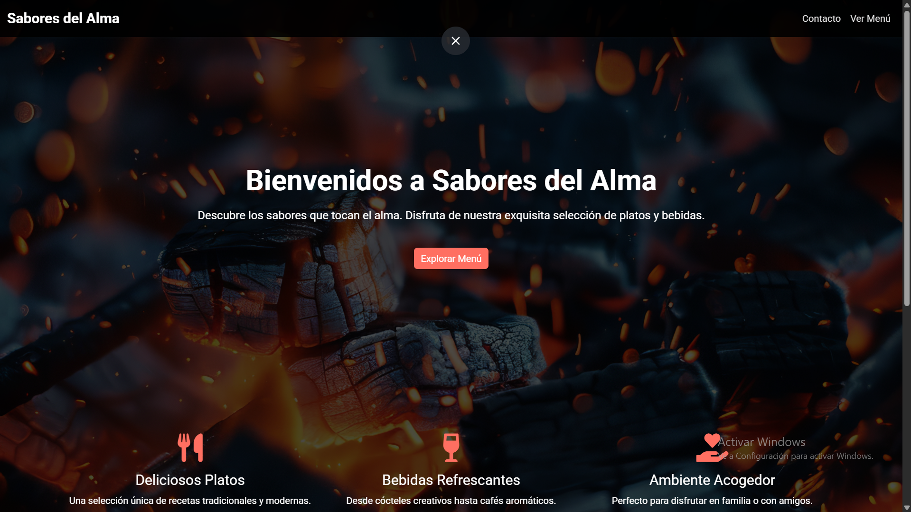

Sabores del Alma
Landing page gastronómica creada para un restaurante de cocina fusión, con una propuesta visual moderna, navegación fluida y adaptación completa a distintos dispositivos.
Incluye secciones de servicios destacados, contacto integrado y una estructura pensada para presentar la marca de forma clara y atractiva.
Logro técnico: implementación de un servidor local en Python para servir archivos estáticos y agilizar el despliegue.
Tecnologías: HTML5, CSS3, Bootstrap 5 y Python.